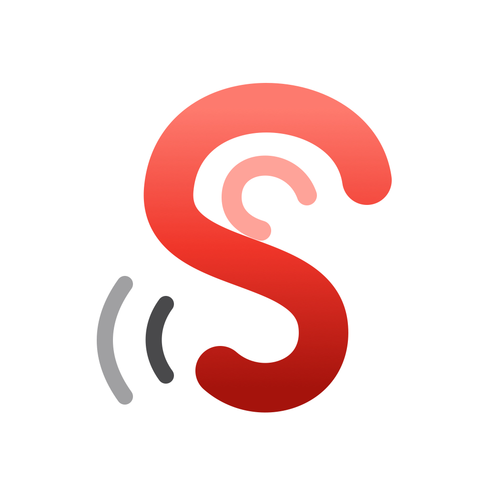
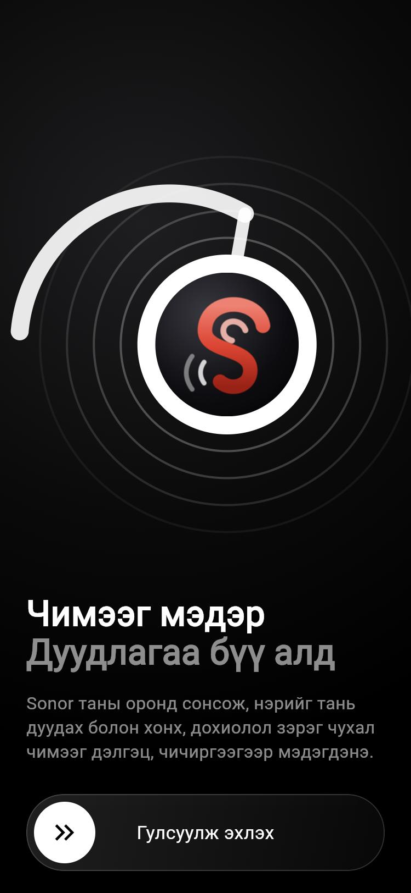
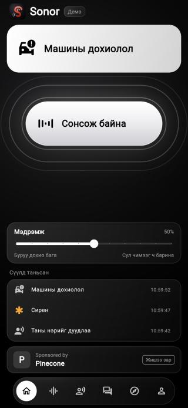
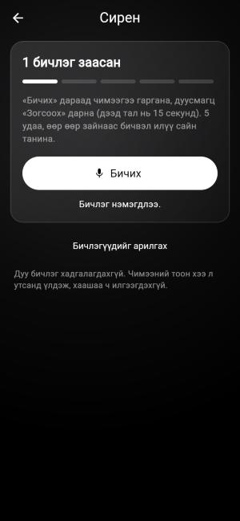
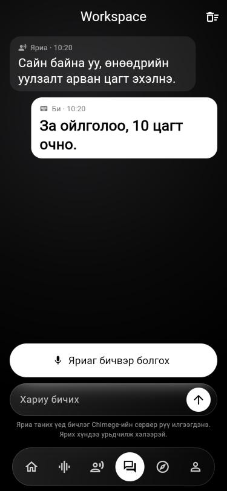
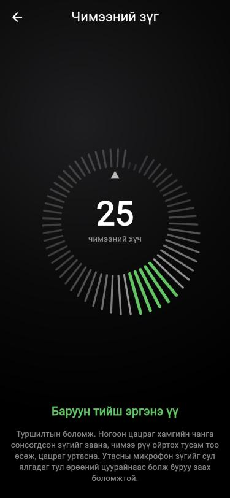

Sonor бол сонсголын бэрхшээлтэй хүний оронд сонсдог утасны апп. Хэн нэгэн нэрийг нь дуудах, хаалганы хонх дуугарах, галын дохиолол хангинах үед утас чичирч, дэлгэц дээр юу болсныг бичнэ.
Сонсоно, бодно, шийднэ, хэлнэ. Үүнийг секундэд дөрвөн удаа давтана.
Чимээ ба нэрийг таних ажил бүхэлдээ утасны дотор хийгдэнэ. Дуу хаашаа ч явахгүй, хадгалагдахгүй. Ганц үл хамаарах зүйл нь Workspace хуудас: тэнд яриаг бичвэр болгохын тулд бичлэгийг Chimege-ийн сервер рүү илгээдэг (8-р хэсэг).

Угтах дэлгэц
Нүүр: сонсож байна, чимээ таньсан
Чимээ заах
WorkspaceЗургууд хөтчийн демо хувилбараас авсан. Зар, дохионууд нь жишээ.
mongol_sound_app бол утсан дээр ажилладаг апп. sound_app бол нэр таних «тархи»-г сургадаг сургууль.
| Файл | Үүрэг | Зүйрлэл |
|---|---|---|
main.dart | Нүүр дэлгэц, доод цэс, чичиргээ | Байшингийн үүд |
sound_engine.dart | Микрофон, хоёр загварыг ажиллуулна | Чих ба тархи |
sounds.dart | 18 чимээний жагсаалт, босго | Чимээний толь бичиг |
few_shot.dart | Хэрэглэгчийн заасан чимээг сурна | Шинэ үг цээжлэх |
settings.dart | Тохиргоог утсанд хадгална | Тэмдэглэлийн дэвтэр |
screens.dart | Нэрс, Чимээ таних, заах, Тохиргоо хуудас | Өрөөнүүд |
glass.dart | Шилэн товч, доод цэс, өнгө | Будаг ба тавилга |
welcome.dart | Анх нээхэд гарах угтах дэлгэц | Үүдний шал |
notifier.dart | Апп ард байхад мэдэгдэл илгээнэ | Шуудан зөөгч |
workspace.dart | Яриаг бичвэрээр харуулах хуудас | Орчуулагчийн ширээ |
transcriber.dart | Бичлэгийг Chimege рүү илгээнэ | Орчуулагч руу залгах утас |
finder.dart | Чимээний зүг хайх (туршилт) | Луужин |
auth.dart | И-мэйл кодоор нэвтрэх (хараахан холбогдоогүй) | Хаалганы түлхүүр |
sound_engine_stub.dart | Хөтчийн демод хуурамч дохио өгнө | Тоглоомын утас |
| Файл | Үүрэг |
|---|---|
make_dataset.py | Chimege-ээс нэрийг 11 өөр хоолойгоор татна |
record_me.py | Жинхэнэ хүний хоолойг микрофоноор бичнэ |
train.py | Загварыг сургаж, шалгаж, апп руу хуулна |
listen_model.py | Сургасан загварыг Mac-ийн микрофоноор туршина |
export_yamnet.py | YAMNet загварыг утсанд тохирох хэлбэрт оруулна |
Компьютер дууг сонсдоггүй, тоо л уншдаг. Микрофон агаарын чичирхийллийг секундэд 16,000 жижиг тоо болгож өгдөг.
Апп бүх дууг хадгалдаггүй. Зөвхөн сүүлийн 1.5 секунд-ийг санадаг. Шинэ тоо ирэхэд хамгийн хуучин нь арчигдана. Үүнийг тойрог буфер гэдэг.
// Тоо бүрийг тойрог дотор дараагийн нүдэнд бичнэ _ring[_pos] = s; _pos = (_pos + 1) % nameSamples; // төгсгөлд хүрвэл эхлэл рүү буцна // 4000 тоо (0.25 секунд) цуглах бүрд шинжилнэ if (++_sinceHop >= hopSamples) { _analyze(); }
Хялбаршуулсан хэсэг: sound_engine.dart-ын _onAudio.
| Юу | Хэд | Яагаад |
|---|---|---|
| Тоо авах хурд | секундэд 16,000 | Хоёр загвар хоёулаа ийм дуугаар сурсан |
| Шинжлэх давтамж | 0.25 секунд тутам | Богино чимээг (тогших) алдахгүйн тулд |
| Нэрийн загварын цонх | 1.5 секунд | Урт нэр бүтнээрээ багтана |
| Чимээний загварын цонх | 0.975 секунд | YAMNet ийм урттай дуу авдаг |
recordClip).Google-ийн бэлэн загвар. 521 төрлийн чимээг мэддэг: хонх, сирен, нохой, хөгжим гэх мэт. Бид сургаагүй, бэлнээр нь авсан.
Дууг аваад 521 тоо буцаана. Тоо бүр «энэ чимээ мөн байх магадлал» (0-ээс 1).
Бид өөрсдөө сургасан жижиг загвар. Ганц л асуултад хариулна: «Сая хэн нэгэн Батхүслэн, Хүслэн, Хүска, Амаржаргал гэж дуудсан уу?»
Ганц тоо буцаана: 0 бол үгүй, 1 бол тийм.
sounds.dart файлд чимээ бүр өөрийн босготой. Жишээ нь галын дохиолол 0.30, нохой хуцах 0.40. Оноо босгоос давбал дохио өгнө.
SoundEvent('fire', ..., 'Гал, утааны дохиолол',
['Fire alarm', 'Smoke detector, smoke alarm'], // YAMNet-ийн аль ангиллууд
0.30, // босго
urgent: true), // яаралтай: шар карт
Нүүр дэлгэцийн «Мэдрэмж» гулсуур бүх босгыг зэрэг өсгөж бууруулна. Баруун тийш татвал сул чимээг ч барина, гэхдээ буруу дохио ихэснэ.
Засвар: нэрийн дохио өгөхөөс өмнө чимээний тархиас асууна: «Сүүлийн 1.5 секундэд хүн ярьсан уу?» Яриа байхгүй бол нэрийн дохио өгөхгүй.
final heardSpeech = _step - _lastSpeechStep <= 6; // 6 алхам = 1.5 секунд
if (heardSpeech && smoothed >= nameThreshold) {
_alert('Таны нэрийг дуудлаа');
}
Айл бүрийн хонх өөр дуугардаг. Тиймээс хэрэглэгч өөрийн хонх, домофон, угаалгын машиныг «+» товчоор заана.
YAMNet 521 онооноос гадна дуу бүрд 1024 тооноос тогтсон «хурууны хээ» (embedding) гаргадаг. Төстэй чимээний хээ төстэй, өөр чимээнийх өөр байна. Апп дууг өөрийг нь биш, зөвхөн энэ хээг хадгална.
Хэрэглэгч 15 секунд хүртэл бичнэ. Ихэнх нь чимээгүй байдаг тул pickWindows хамгийн чанга хэсгүүдийг олж, зөвхөн тэднээс хээ авна.
Нэг талд хэрэглэгчийн заасан хээнүүд, нөгөө талд 498 «биш» жишээ (яриа, өрөөний чимээ, дохионы дуу). trainClassifier энэ хоёрыг салгах шугамыг 300 удаа бага багаар засаж олно.
for (var step = 0; step < 300; step++) {
// жишээ бүр дээр: одоогийн таамаг хэр буруу байна вэ?
final p = 1 / (1 + exp(-z)); // 0..1 магадлал
final g = isPos ? (p - 1) * posWeight : p;
// бурууг багасгах чиглэлд жингүүдээ бага зэрэг хөдөлгөнө
w[i] -= rate * grad[i];
}
Ганц удаагийн санамсаргүй өндөр оноонд хууртахгүйн тулд дараалсан хоёр цонх (0.5 секунд) хоёулаа босго давсан үед л дохио өгнө.
| Туршилт | Үр дүн |
|---|---|
| Таван бичлэгээр заасан чимээг таних | 75% орчим |
| 7 минутын ярианд буруу дохио | 0–1 удаа |
| Нэрийг ингэж цөөн бичлэгээр заах | ажиллахгүй (40–46%), тиймээс нэрэнд ашиглаагүй |
Хиймэл туршилт: компьютерын дохионы дууг өрөөний чимээтэй хольсон. Утсан дээр жинхэнэ хонхоор хараахан хэмжээгүй.
Хэрэглэгч сонсохгүй тул апп нүд ба арьсаар нь хэлнэ: том карт, чичиргээ, мэдэгдэл.
| Юу болсон | Хэмнэл |
|---|---|
| Нэр дуудсан | хурдан 3 удаа |
| Бусад чимээ | энгийн 2 удаа |
| «… шиг чимээ» | чичрэхгүй |
// Нэр бол хурдан гурав, бусад бол энгийн хоёр
d.isName ? _buzz(3, fast: true) : _buzz(2);
Сирен 30 секунд дуугарвал апп 120 удаа шинжилнэ. Тэр бүрд чичирвэл тэвчишгүй. Тиймээс ижил дохиог 2.5 секундэд нэг л удаа өгнө (тэмдэглэл ба чанга чимээний дохиог 30 секундэд нэг удаа).
void _alert(Detection d, {Duration wait = cooldown}) {
final last = _lastHit[d.label];
if (last != null && d.time.difference(last) < wait) return; // саяхан хэлсэн
_lastHit[d.label] = d.time;
onDetection(d);
}
Хэрэглэгч өөр апп нээсэн эсвэл утсаа түгжсэн үед микрофон үргэлжлүүлэн сонсоно. Чимээ танигдвал notifier.dart дэлгэцийн дээрээс мэдэгдэл буулгана.
Ямар чимээ болохыг таних албагүй дохио ч бий: дуу 5 секунд тасралтгүй чанга байвал «Удаан үргэлжилсэн чанга чимээ» гэж анхааруулна. «Чанга» гэдгийн хэмжээ одоогоор таамаг.
Аппыг хаагаад нээхэд тохиргоо алга болох ёсгүй. AppSettings дараах зүйлсийг утасны санах ойд бичнэ:
Доод цэсний дүрс бүр нэг хуудас нээнэ: Нүүр, Чимээ таних, Нэрс, Workspace, Чимээний зүг, Тохиргоо. Чимээ заах хуудас (TeachScreen) ба бүртгэлийн хэсэг мөн энд.
Шилэн гадаргуу, том «Сонсох» товч, доод цэс. Апп хар ба цагаан хоёр л өнгөтэй, зөвхөн яаралтай дохио шар. Товч идэвхтэй үед өнгө нь урвуулагдаж, товчноос долгион тархаж, микрофоны бодит түвшнээр баганууд хөдөлнө. Ингэснээр «үнэхээр сонсож байна» гэдэг нь харагдана.
Анх нээхэд нэг удаа гарна. Чихэвчний зургийг кодоор зурсан (зураг файл биш). Доод товчийг гулсуулж эхэлнэ.
Туршилтын хуудас. Утсаа эргүүлэхэд зүг бүрд сонсогдсон чимээний хүчийг 60 зураастай тойрог дээр тэмдэглэж, хамгийн чанга зүгийг ногооноор заана.

Чимээний зүг (демо өгөгдөл)Ажлын байранд хажуугийн хүн ярихад түүний үг дэлгэц дээр бичвэр болж гарна. Хариугаа бичихэд том үсгээр харагдана.
Chimege нэг удаад 15 секундээс урт дуу авдаггүй. Тиймээс splitForTranscription урт яриаг хэсэглэнэ. Үгийг дундуур нь таслахгүйн тулд хэсэг бүрийн сүүлийн 4 секунд дотроос хамгийн нам гүм цэг-ийг (амьсгаа авах завсар) олж тэнд хуваана.
// Сүүлийн 4 секунд дотор 0.2 секундийн цонхоор гүйлгэж хамгийн нам гүмийг хайна
if (energy < quietest) {
quietest = energy;
cut = at + frame ~/ 2;
}
| Бичлэг | Хариу ирсэн хугацаа | Үр дүн |
|---|---|---|
| 10 секунд яриа | 1 секунд | зөв, цэг таслалтай |
| 10 секунд, маш сул дуутай | 1 секунд | зөв |
| 32 секунд (3 хэсэг) | 2.8 секунд | бүтэн гарсан |
Утасны микрофоноор, оффисын шуугиантай орчинд хараахан шалгаагүй.
Загвар төрөлхийн юу ч мэддэггүй. Түүнд мянга мянган жишээ үзүүлж «энэ бол нэр, энэ бол биш» гэж заана.
| Алхам | Файл | Юу хийдэг |
|---|---|---|
| 1. Олон хоолой цуглуулна | make_dataset.py | Chimege-ээр нэр бүрийг 11 хоолой, 4 аялгаар уншуулна. Мөн «биш» жишээ: Батхүлэг, Хүсэлт зэрэг төстэй үгс, энгийн өгүүлбэрүүд. |
| 2. Жинхэнэ хоолой бичнэ | record_me.py | Хүн нэрийг чанга, зөөлөн, холоос, хурдан гэх мэтээр дуудаж бичүүлнэ. Компьютерын хоолой дангаараа хүрэлцдэггүй. |
| 3. Сургана | train.py | Бичлэгүүдийг өрөөний чимээтэй хольж 22,000 жишээ үүсгээд загварт үзүүлнэ. |
Загвар дууг шууд биш, «дууны зураг» (log-mel спектрограмм) болгож хардаг: хэвтээ тэнхлэг нь цаг, босоо нь нам ба өндөр авиа, өнгө нь хэр чанга. Дараа нь зураг таньдаг жижиг сүлжээ (4 давхар) тэр зургаас «нэр»-ийн хэлбэрийг хайна.
for filters in (24, 48, 96, 128): # 4 давхар: нарийн зураасаас том хэлбэр рүү x = L.Conv2D(filters, 3, padding="same")(x) x = L.MaxPooling2D(2)(x) out = L.Dense(1, activation="sigmoid")(x) # ганц хариу: нэр мөн үү (0..1)
Сургасан хүний хоолойг таньсан: 85.8%
Өөр хүний хоолойг таньсан: 67.6%
Энгийн ярианд буруу дохио: 2.5%
Төстэй үгэнд буруу дохио: 2.0%
Орчны чимээнд буруу дохио: 5.7%
Дөрвөн нэртэй загвар, 2026-10-07. «Өөр хүн» гэдэг нь сургалтад оруулаагүй хоёр компьютерын хоолой.
test/widget_test.dart файлд 19 шалгалт байгаа, бүгд давдаг. Код өөрчлөх бүрд ажиллуулна:
flutter analyze && flutter test
Жишээ нь: чимээ бүрийн ангилал YAMNet-д үнэхээр байгаа эсэх, ангилагч заасан чимээг бусдаас ялгаж байгаа эсэх, урт яриа 14 секундээс хэтрэхгүй хэсэглэгдэж байгаа эсэх, буруу код оруулахад нэвтрүүлэхгүй байгаа эсэх.
| Боломж | Байдал |
|---|---|
| Сонсох, бэлэн чимээ таних, чичиргээ | утсан дээр ажилласан |
| Гурван нэр таних | утсан дээр ажилласан |
| «Амаржаргал» нэр | загвар суусан, утсан дээр дуудаж шалгаагүй |
| Сиренийг нэр гэж андуурахгүй байх | Mac дээр батлагдсан, утсан дээр дахин шалгаагүй |
| Чимээ заах | Mac дээр хиймэл туршилтаар 75%, утсан дээр шалгаагүй |
| Workspace: яриа → бичвэр | Mac дээр жинхэнэ яриагаар ажилласан, утасны микрофоноор шалгаагүй |
| Түгжээтэй үеийн мэдэгдэл | шалгаагүй |
| Чимээний зүг | туршилт, зүг зөв заах эсэх тодорхойгүй |
| И-мэйл кодоор нэвтрэх | холбогдоогүй (сервер хэрэгтэй) |
| Хөтчийн хувилбар | зөвхөн дизайны демо, жинхэнээсээ сонсдоггүй |
Утас кабелиар холбогдсон, түгжээгүй байх ёстой. Mac-ийн Terminal дээр mongol_sound_app хавтсаас:
flutter build ios --release xcrun devicectl device install app --device <төхөөрөмжийн дугаар> build/ios/iphoneos/Runner.app
flutter run ажиллахгүй, дээрх аргыг хэрэглэнэ.| Үг | Энгийнээр |
|---|---|
| Загвар (model) | Олон жишээ харж сурсан «тархи». Оролт аваад таамаг буцаана. |
| YAMNet | Google-ийн бэлэн загвар, 521 төрлийн чимээ мэддэг. |
| TFLite | Загварыг утсан дээр хурдан ажиллуулдаг хэлбэр. |
| Embedding | Дууны «хурууны хээ»: 1024 тоо. Төстэй дуу төстэй хээтэй. |
| Босго (threshold) | «Хэр итгэлтэй байвал хэлэх вэ» гэсэн шугам. |
| Буруу дохио | Болоогүй зүйлийг болсон гэж хэлэх. |
| Тойрог буфер | Зөвхөн хамгийн сүүлийн хэсгийг санадаг богино ой санамж. |
| Сургах (training) | Загварт жишээ үзүүлж, алдаа бүрд нь бага зэрэг засах. |
| Сөрөг жишээ | «Энэ биш» гэж заахад хэрэглэдэг жишээ. |
| Спектрограмм | Дууг зураг болгосон хэлбэр: цаг, авианы өндөр, чанга сул. |
| API, токен | Өөр компанийн үйлчилгээг дуудах хаалга ба түүний түлхүүр. |
| STT / TTS | Яриаг бичвэр болгох / бичвэрийг яриа болгох. |
| Flutter, Dart | Апп бичсэн хэрэгсэл ба хэл. |
| Демо | Харагдацыг үзүүлэх хуурамч хувилбар. |
Энэ баримтыг 2026 оны 10 сарын 8-ны кодын байдлаар бэлтгэв. Кодын хэсгүүд ойлгоход хялбар болгох үүднээс товчилсон, бүтэн хувилбар нь заасан файлд байгаа.